Image를 Host로 전송할 때의 Format을 변경할 수 있습니다. 세부적인 전송 Order는 4.1.4 Pixel Format 항목을 참고하십시오.
Test Pattern
Off Grey Horizontal Ramp Grey Vertical Ramp
Test Image를 선택할 수 있습니다.
4.1.1 ROI (Region Of Interest)
Width, Height, Offset X, Offset Y를 설정함으로써 원하는 영역의 Image만 출력할 수 있습니다. 출력 Height 사이즈가 작아질수록 Frame Rate이 증가합니다.
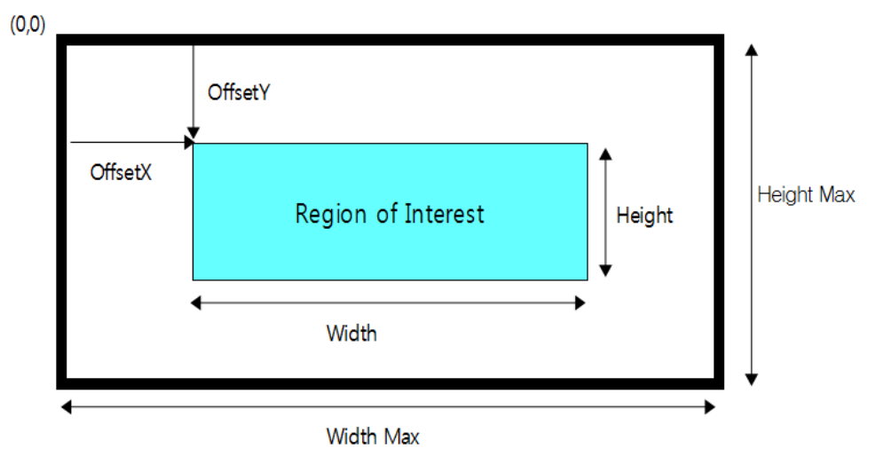
< Figure 1 - ROI Setting >
참고사항
ROI로 인해 변경된 Frame Rate은 ‘Resulting Frame Rate’ 파라미터를 통해 확인할 수 있습니다.
4.1.2 Decimation Horizontal / Vertical
Image 센서에서 수직 또는 수평 방향으로 1-Pixel씩 건너뛰며 읽어내는 기능입니다. Image의 해상도는 절반으로 줄어드는 반면 Frame Rate은 증가합니다.
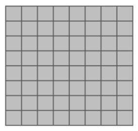
Decimation Hor. = 1x Decimation Vert. = 1x
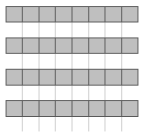
Decimation Hor. = 1x Decimation Vert. = 2x
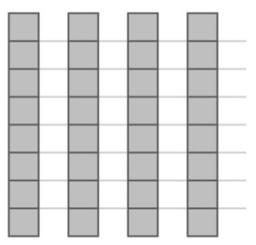
Decimation Hor. = 2x Decimation Vert. = 1x
참고사항
Decimation으로 인해 변경된 Frame Rate은 ‘Resulting Frame Rate’ 파라미터를 통해 확인할 수 있습니다.
4.1.3 Reverse X, Y
영상의 좌/우 또는 상/하를 반전하여 출력하는 기능입니다.
Reverse X 모드를 True로 설정시, 영상의 좌/우가 반전됩니다.
Reverse Y 모드를 True로 설정시, 영상의 상/하가 반전됩니다.
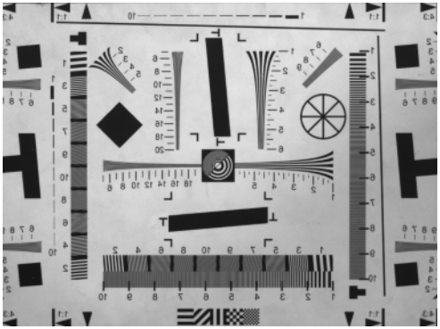
Reverse X = False, Reverse Y = False
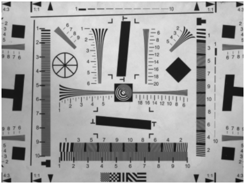
Reverse X = True, Reverse Y = False
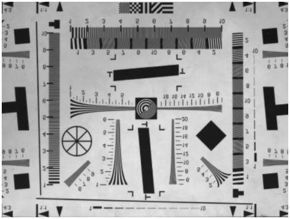
Reverse X = False, Reverse Y = True
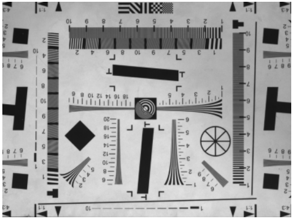
Reverse X = True, Reverse Y = True
유의사항
‘Reverse Y’ 선택 시 Defect Filter 사용이 제한되기 때문에 불량 화소가 나타날 수 있습니다. 이로 인해 노출된 불량화소는 ‘Defect Pixel Correction’ 카테고리에서 제거할 수 있습니다.
ROI와 Reverse가 동시에 사용될 경우, 반전된 Image로부터 ROI 기능이 적용됩니다. Reverse 적용 이전과 동일한 영역을 활성화하기 위해선 Total Size - ROI Size 만큼의 Image Offset이 필요합니다.
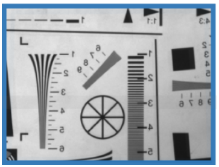
Image Size : 1296 * 1032 Offset X : 0 Offset Y : 0 Reverse X : False Reverse Y : False
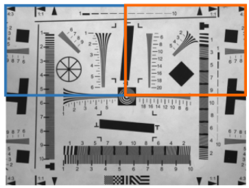
Image Size : 648 * 516 Offset X : 0 Offset Y : 0 Reverse X : False Reverse Y : False
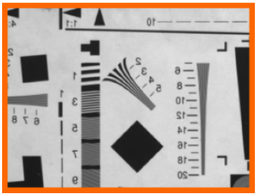
Image Size : 648 * 516 Offset X : 0 Offset Y : 0 Reverse X : True Reverse Y : False
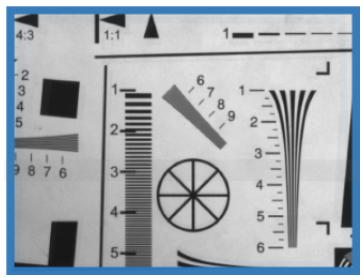
Image Size : 648 * 516 Offset X : 648 Offset Y : 0 Reverse X : True Reverse Y : False
4.1.4 Pixel Format
카메라에서 출력되는 영상의 Pixel Format을 변경할 수 있는 기능입니다. 각 Pixel Format 별 Image 데이터의 전송량에 차이가 있기 때문에 전송 속도 및 Bandwidth가 달라질 수 있습니다.
Mono 8
Mono 10
8-bit image data into 8bits Description : 8-bit monochrome unsigned Pixel Size : 1byte Pixel Value range : 0 to 255
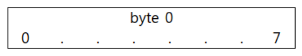
10-bit image data into 16-bits Description : 10-bit monochrome unsigned Pixel Size : 2byte Pixel Value range : 0 to 1023
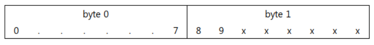
Mono 12
Mono 10 Packed
12-bit image data into 16-bits Description : 12-bit monochrome unsigned Pixel Size : 2byte Pixel Value range : 0 to 4095
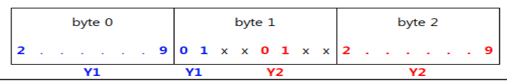
2 X 10-bit image data packed into 24bits (Y1, Y2) Description : 10-bit packed monochrome unsigned Pixel Size : 3 bytes for two pixels Pixel Value range : 0 to 1023
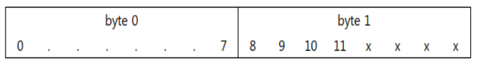
Mono 12 Packed
2 X 12-bit image data packed into 24bits (Y1, Y2) Description : 12-bit packed monochrome unsigned Pixel Size : 3 bytes for two pixels Pixel Value range : 0 to 4095
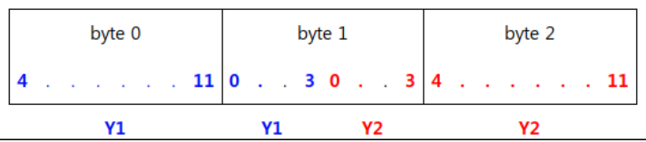
4.1.5 Test Pattern
Image Processing의 중간 단계에서 영상을 테스트 패턴으로 치환하여 전송합니다. Test Pattern 기능이 활성화 되더라도 ROI size 및 Trigger 입력 그리고 ‘Acquisition Frame Rate’ 등 Image 취득과 관련된 기능들은 유효합니다. Test Pattern Image는 8bit grey level(0~255DN)로 생성됩니다.
Off : Sensor Image
On : Test Pattern
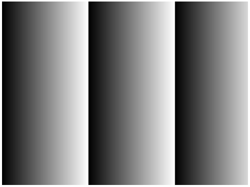
Grey Horizontal Ramp
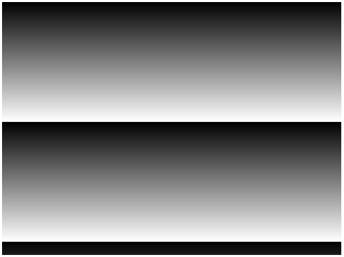
Grey Vertical Ramp
4.2 Acquisition Control
카메라로부터의 Image 획득 방식을 설정할 수 있는 기능입니다.
Item
Setting Value
Description
Acquisition Mode
Continuous Single Frame Multi Frame
‘Acquisition Start’ 커맨드로부터 아래 조건까지 영상을 취득합니다. - Continuous : Acquisition Stop 시 까지 연속으로 획득합니다. - Single Frame : 한 장의 Image 만을 획득합니다. - Multi Frame : 설정한 카운트 만큼의 영상을 획득합니다.
- Off: 카메라가 freerun 모드로 동작합니다. Internal trigger 신호가 생 성됩니다. Internal trigger 의 주기는 ‘Acquisition Frame Rate’에 의해 결 정됩니다. 만약 ‘Acquisition Frame Rate Enable’ 파라미터가 ‘Off’일 경 우, 카메라는 현재 카메라 세팅에서 동작할 수 있는 최대 frame rate 로 동작합니다. - On: 카메라가 Trigger Mode 로 동작합니다. Trigger 는 하드웨어 (Line 1~4) 또는 소프트웨어 트리거 커맨드를 통해 생성됩니다.
Resulting Frame Rate
(Read Only)
‘Trigger Mode’가 ‘Off’로 설정된 상태에서의 Frame rate 를 보여줍니다. Image 사이즈와 ‘Acquisition Frame Rate’, ‘Exposure Time’ 및 ‘Pixel Format’, ‘Decimation’ 등에 의해 결정됩니다.
Trigger Source
Line 1 Line 2 Line 3 Line 4 Software
Trigger 입력으로 사용하고자 하는 Trigger 의 Source 를 선택합니다. 세 부사항은 ‘4.3.2 Trigger Source’ 항목을 참고하세요.
Trigger Delay
0 to 57,868,838 (Unit: us)
카메라가 입력받은 트리거로 부터 Image 센서의 노광까지의 지연 시 간을 정의합니다. 세팅 값 0 은 Delay Off 를 의미 합니다. 세부사항은 ‘4.3.3 Trigger Delay’ 항목을 참고하세요.
Transfer Delay
0 to 57,868,838 (Unit: us)
센서로부터 읽어온 Image를 전송 최종단에서 지연시킬 시간을 정의 합니다. ‘Low Latency Mode Enable’이 ‘False’일 때에만 유효합니다. 세 부사항은 ‘4.3.4 Transfer Delay’ 항목을 참고하세요.
Trigger Activation
Rising Edge (Read Only)
카메라 내부에서의 Trigger 신호 위상의 기준을 정의합니다. 입력 트리 거의 위상을 변경하기 위해선 ‘Line Inverter’를 사용해야 합니다.
Line1~4: Direct I/O 또는 Opto-Isolated port 를통해트리거를입력받습니다. 자세한내용은‘3.2 카 메라 DC IN & External I/O Pin Map’, ‘3.5 External I/O 내부회로’, ‘4.5 Digital I/O Control’을참고해 주시기바랍니다.
카메라외부 I/O 신호를설정할수있는기능입니다. 각 I/O 의입/출력방향은고정되어있으며, I/O port 를통한신호의논리적사양을변경할 수있습니다.
Item
Setting Value
Description
Line Selector
Line 1 Line 2 Line 3 Line 4
세부 설정을 원하는 Line 을 선택합니다. - Line1, 2: Direct I/O - Line3, 4: Opto-Isolated Input
Line Debouncer Time
0 to 882.995 (Unit: us)
Line Debouncer Time 을 조정합니다. 세부사항은 ‘4.5.1 Line Debouncer Time’ 항목을 참고하세요.
Line Mode
Input Output
카메라의 Input/Output 을 의미합니다. Line 1, Line2 는 Input/Output 설정이 가능합니다. Line 3, Line4 는 Input 설정만 가능합니다.
Line Inverter
True False
- True: Line 의 입/출력의 위상을 반전 시킵니다. - False: Line 의 위상을 반전시키지 않습니다.
Line Status
True False (Read Only)
선택된 Line 의 현재 상태를 반환합니다. True 는 Logical High 를 의미하 며, False 는 Logical Low 를 의미 합니다.
Line Source
Exposure Active Timer Active User Output 1
‘Line Mode’가 ‘Output’으로 설정된 경우에만 사용 가능합니다. - Exposure Active: 노광시간 동안 활성화된 Flash Signal 이 출력 됩니다. - Timer Active: ‘Counter And Timer Control’ 카테고리의 ‘Timer Duration’에 설정된 시간만큼 Flash Signal 이 출력 됩니다. - User Output 1: ‘User Output Value’ 값이 출력 됩니다.
User Output Value
True False
‘Line Source’가 ‘User Output 1’로 설정되었을 때의 출력 값을 설정합니 다.
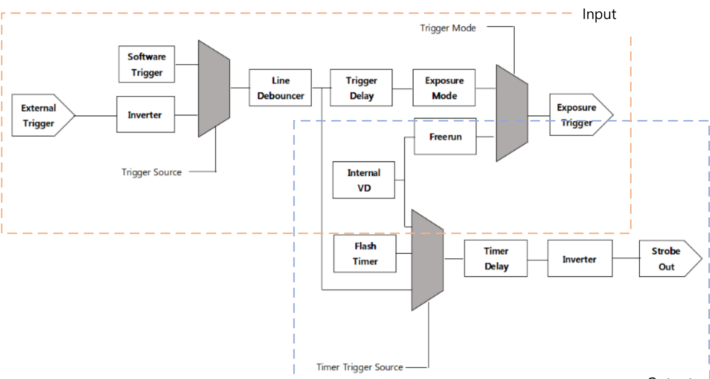
Input Output <Block Diagram of Digital I/O Control>
4.5.1 Line Debouncer Time
카메라외부 Trigger Line 의채터링노이즈를제거(Debouncing)하는기능입니다. ‘Line Debouncer Time’에설정된시간만큼상태를유지하는신호에대해서만유효한입력으로받습니다. Line Debouncer Timer 는 Trigger Line 의상태변이를체크하기때문에‘Line Debouncer Time’에설정된시간만큼지연된 트리거를입력받게됩니다.
외부로부터 입력되는 Trigger 신호에 대한 카메라 동작 신뢰성을 확인하 기 위한 기능입니다. - LineTrigger: 총 입력된 Line1 Trigger 및 Software Trigger 개수. - ExposureStart: 실제 노광이 시작된 횟수. - ExposureEnd: 실제 노광이 종료된 횟수. - FrameEnd: Sensor 로부터 Readout 한 Frame 의 수. - ExposureOverTrigger: Exposure 도중 새로운 Trigger 가 입력된 개수. - ReadoutOverTrigger: Readout 도중 새로운 Exposure 가 끝난 회수. (단, Readout Overtrigger 는 Trigger Mask Enable = On 일 때만 카운트 됨.)
Counter Value
(Read Only)
Acquisition Start 시점에 모든 카운터 값들은 0 으로 초기화 됩니다.
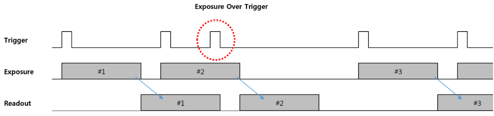
<Timing Diagram of Exposure Over Trigger>
1) Exposure Mode = Timed 일경우
2) #3 Trigger 신호는#2 Trigger 신호의노광중에입력되었기때문에무시됩니다.
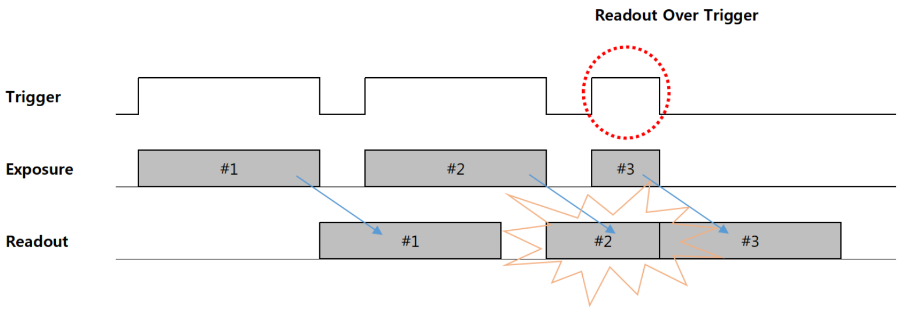
<Timing Diagram of Readout Over Trigger>
1) Exposure Mode = Trigger Width 일경우
2) #3 Trigger 신호는최소주기보다빠르게입력되었습니다. 따라서#2 Image의 Readout 도중#3 에
Exposure End Acquisition Transfer Start Acquisition Transfer End Over Trigger
- Exposure End: 노광이 종료된 시점에 Event 를 발생 시킵니다. - Acquisition Transfer Start: Image Frame 의 전송 시작 시점에 Event 를 발생 시킵니다. - Acquisition Transfer End: Image Frame 의 전송 종료 시점에 Event 를 발생 시킵니다. - Over Trigger: Exposure 도중에 유입된 Trigger 신호 감지 시점 에 Event 를 발생 시킵니다.
Event Notification
Off On
각 Selector 의 Event 에 대한 알림을 활성화 또는 비활성화 합니 다.
4.9 Analog Control
영상신호의 Analog 및 Digital 특성을변경할 수있습니다. 주로 Image 화소에대한속성을변경할 수 있는기능이나열되어있습니다.
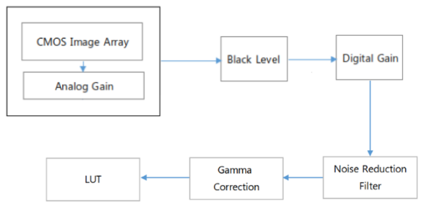
<Block Diagram of Analog Control>
Item
Setting Value
Description
Gain Selector
All DigitalAll
설정할 Gain 을 선택합니다. 두 개의 각 Gain 은 서로 독립적인 Gain 으로, 동시에 다른 값을 설정할 수 있습니다. - All: Analog Gain - Digital All: Digital Gain
Gain Raw
All: 0 to 180 DigitalAll: 65536 to 1048575
원하는 Gain 값을 Raw 값으로 적용할 수 있습니다.
Gain Abs
All: 1 to 8x DigitalAll: 1 to 16x
원하는 Gain 값을 배율로 적용할 수 있습니다. 원본 Image의 밝 기를 1 배로 규정하여 상대적인 배율을 입력할 수 있습니다. ※ 참고: dB 환산식 Gain dB = 20 * log(GainAbs)_
Gain Auto
Off Once Continuous
AGC(Automatic gain control) 기능을 설정할 수 있습니다. 이 때 Target 밝기 값은 ‘Auto Exposure Target’에 정의됩니다. - Off: Gain 을 수동으로 설정합니다. - Once: 한번만 Gain 값을 조절하여 원하는 밝기 값으로 변경합니다. - Continuous: 지속적으로 Gain 값을 조절하여 원하는 밝기값을 유지합니다.
Auto Gain Lower Limit
(Unit: Abs)
가변 Gain 범위의 최소 값
Auto Gain Upper Limit
(Unit: Abs)
가변 Gain 범위의 최대 값
Black Level Raw
0 to 4095 (Unit: 12bit DN)
Black Level 값을 변경합니다. Image 신호의 DC Offset 을 조정할 수 있습니다.
Gamma Enable
True False
Gamma 기능 활성화 여부를 결정합니다.
Gamma
0 to 3.99
Gamma 수치를 조정합니다.
Noise Reduction Filter
True False
Noise Reduction Filter 기능 활성화합니다. Sharpness 가 다소 감 소할 수 있습니다.
4.9.1 Gain
Gain 은 Frame Rate 의저하없이영상의감도를변경할 수있는반면, Image 노이즈또한함께증가할 수있습니다. 카메라의 Gain 은 Analog Gain 및 Digital Gain 으로각각구성되어있으며, ‘Gain Selector’를 통해선택할수있습니다.
Gamma Correction 을 조정하기 위한 기능입니다. 카메라 영상의 명암 대비를 보정할 수 있습니다.
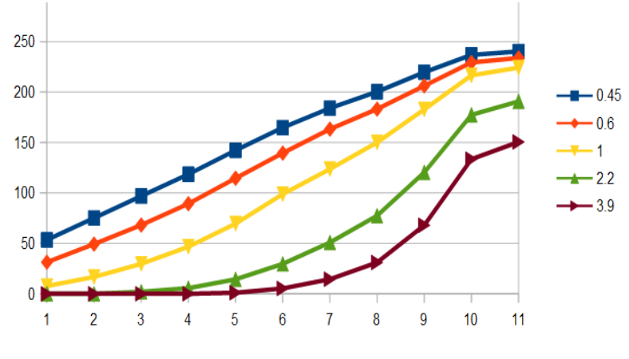
<ITE ‘GrayScale ChartⅡ(y=0.45)’>
유의사항
Gamma Correction 기능은 LUT 기능과 동시에 사용할 수 없습니다. Gamma 와 LUT 를 일시에 활성화할 경우, 먼저 활성화 시킨 기능은 자동으로 Disable 상태가 됩니다.
4.9.4 Noise Reduction Filter
노이즈 필터를 통해 영상 노이즈를 감쇄할 수 있는 기능입니다. 활성화 시 영상의 Sharpness가 다소 감소할 수 있습니다.
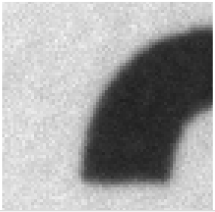
Noise Reduction Filter = False
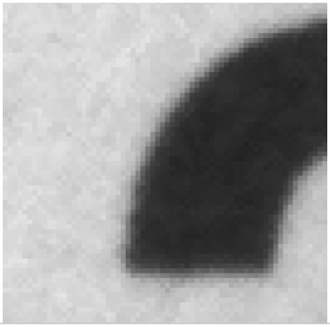
Noise Reduction Filter = True
4.10 Defect Pixel Correction
카메라의 Defect Pixel 을 관리할 수 있는 기능입니다. 출하 시 불량 화소에 대한 보정이 이루어집니다. 하지만 사용자가 불량 화소라고 생각하는 Pixel 을 추가로 정의하여 보정할 수 있습니다. 각 카메라당 최대 256 개의 불량 화소를 PROM 에 저장할 수 있습니다.
Item
Setting Value
Description
Defect Filter Enable
True False
Defect Filter 보정 활성화 여부를 결정합니다.
Defect Filter Test Mode Select
Off Mark White Mark Black Mark White with Black Background
보정된 Defect Pixel 을 영상에 나타내는 옵션입니다.
Defect Pixel Replacement Count
1 to 256
카메라당 보정할 불량 화소의 개수입니다.
Defect Pixel Index
0 to 255
보정할 Defect Pixel 의 Index 입니다.
Defect Pixel X Coordinate
0 to WidthMax - 1
보정할 Pixel 의 X 축 좌표 값을 입력합니다. Image Pixel 의 좌표는 0 부터 시작합니다.
Defect Pixel Y Coordinate
0 to HeightMax - 1
보정할 Pixel 의 Y 축 좌표 값을 입력합니다. Image Pixel 의 좌표는 0 부터 시작합니다.
Defect Pixel Replacement
Execute
입력한 보정 값을 카메라에 적용합니다.
※ 유의사항
- 보정이후, 반드시‘User Set Save’ 커맨드를입력해야카메라에저장됩니다.
Ex) 공장출하시 20 개의 Defect Pixel 이보정된상태에서, 사용자가두개의 Pixel 을추가할경우
Defect Pixel Replacement Count
Defect Pixel Index
Defect Pixel X Coordinate
Defect Pixel Y Coordinate
19
18
…
…
20
19
…
…
21
20
(156, 31)
(1131, 125)
22
21
(208, 114)
(321, 611)
Factory Defined +1 User Defined +1 User Defined
4.11 Flat Field Correction
Flat Field Correction(FFC)은촬영한 Image의밝기값을균일하게보정하는기능입니다. 밝기값이균일 하지않은원인으로는렌즈그림자에의한영향, 조명밝기의불균일, Sensor Pixel 마다의감도차이등이 있습니다. HG-A130SW 모델은 Tile 방식으로 FFC 기능을수행합니다.
Item
Setting Value
Description
FFC Enable
Off On
FFC 기능 활성화 여부를 결정합니다.
Black Calibration
Execute
Black Calibration 을 수행합니다. 차폐된 환경에서 어두운 영상을 획득하여 영상을 보정합니다.
White Calibration
Execute
White Calibration 을 수행합니다. 실제 사용 환경에서 밝은 영상을 획득하여 영상을 보정합니다.
FFC Save Load Flash Select
0 to 3
FFC Save/Load 를 위한 Index 를 선택합니다.
FFC Save
Execute
선택한 ‘FFC Save Load Flash Select’ 항목에 설정을 저장합니다.
FFC Load
Execute
선택한 ‘FFC Save Load Flash Select’ 항목의 설정을 불러옵니다.
FFC High Gain Mode
Off On
FFC High Gain Mode 활성화 여부를 결정합니다. - Off : White Calibration 시, Gain 이 최대 1.5 배까지 적용됩니다. - On : White Calibration 시, Gain 이 최대 2 배까지 적용됩니다.
Original data
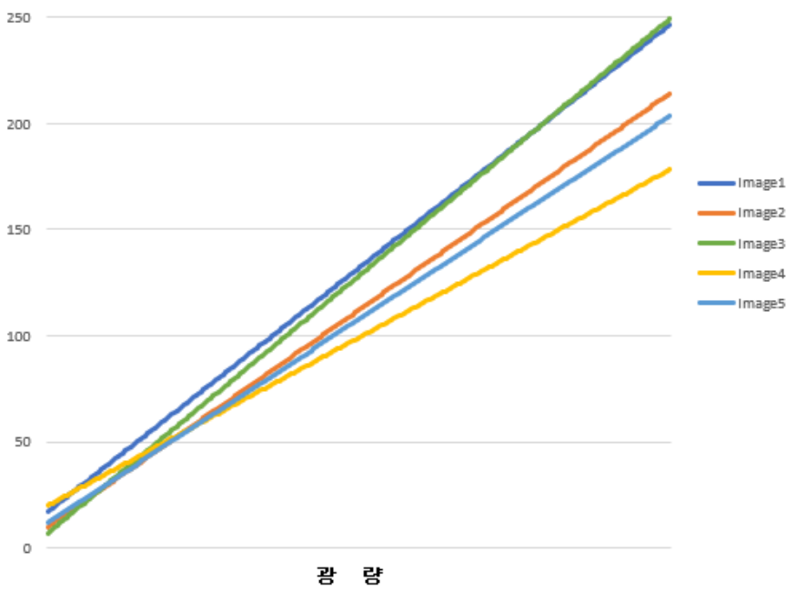
Black Calibration
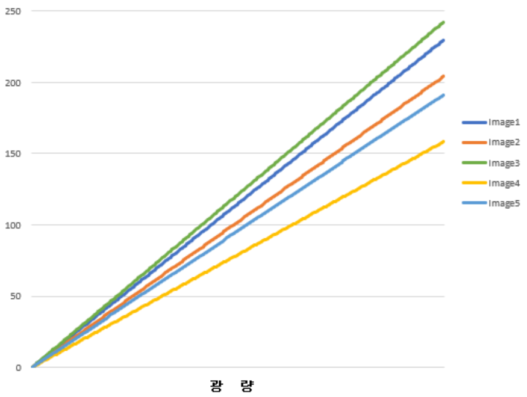
White Calibration
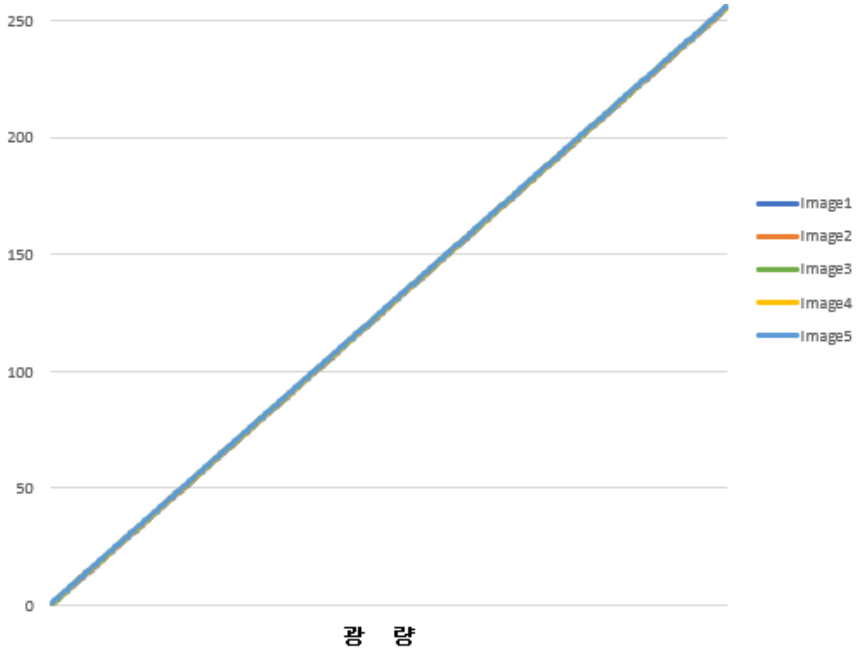
Before
After
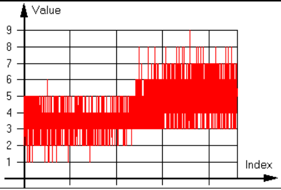
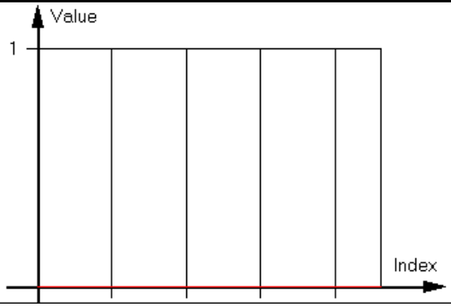
<Image & Histogram of Black Calibration>
Before
After
<Image & Histogram of White Calibration>
유의사항
FFC 이전에 Defect Correction 이 선행되어야 하고, Enable 된 조건에서 Calibration 해야 합니다.
Black Calibration -> 광량이 0 인 환경(차폐)에서 수행해야 합니다.
White Calibration -> 평균 200DN 이하인 환경에서 균일한 밝기의 피사체(또는 면)를 촬상하여 수행해야 합니다. Black Calibration -> White Calibration 순서로 수행해야 합니다.
4.12 Sharpness Enhancement
Sharpness Enhancement 는 Image 에 있는 윤곽선을 강조하여 이미지를 선명하게 보정하는 기능입니다.
Item
Setting Value
Description
Sharpness Enable
Off On
Sharpness Enhancement 기능 활성화 여부를 결정합니다.
Sharpness Strength
0 to 15.996
Sharpness Enhancement 강도를 설정합니다.
Sharpness Filter Size
0.001 to 4.000
Sharpness Enhancement Filter Size 를 설정합니다.
유의사항
‘Sharpness Strength’, ‘Sharpness Filter Size’ 설정에 따라 보다 선명한 Image를 획득할 수 있으나, Noise 도 함께 강조될 수 있습니다. ‘Sharpness Strength’, ‘Sharpness Filter Size’를 크게 설정하는 경우, ‘Noise Reduction Filter’ 기능을 함께 사용하면 Noise 를 보정할 수 있습니다.
Contrast Brightness Control 은 영상의 대비와 밝기를 조절하는 기능입니다. Contrast/Brightness 값을 조절하여 영상을 보정하거나 Min/Max 값을 조절하여 Histogram 을 Stretching 할 수 있습니다.
Item
Setting Value
Description
Contrast
-99 to 99
Contrast 를 조절합니다.
Brightness
-2047 to 2047 (Unit : 12bit DN)
Brightness 를 조절합니다.
Histogram Stretch Min
-2147483648 to Histogram Stretch Max-1 (Unit : 12bit DN)
Histogram 의 Min 값을 설정합니다. 설정 값을 0 으로 Stretching 합니다.
Histogram Stretch Max
Histogram Stretch Min+1 to 2147483647 (Unit : 12bit DN)
Histogram 의 Max 값을 설정합니다. 설정 값을 4095 로 Stretching 합니다.
Item
Setting Value
Description
Auto Contrast Mode
Off Once Continuous
Auto Contrast Mode 기능 활성화 여부를 결정합니다. - Off : Contrast/Brightness 를 수동으로 설정합니다. - Once : 한번만 Contrast/Brightness 값을 조절하여 유지합니다. - Continuous : 지속적으로 Contrast/Brightness 값을 조절합니다.
Auto Contrast Factor Low
0.000 to 50.000 (Unit : %)
‘Auto Contrast Factor Low’ 값을 설정합니다. 영상 전체 Pixel 의 하위 백분율입니다.
Auto Contrast Factor High
0.000 to 50.000 (Unit : %)
‘Auto Contrast Factor High’ 값을 설정합니다. 영상 전체 Pixel 의 상위 백분율입니다.
Auto Contrast Target Low
0 to Auto Contrast Target High-1 (Unit : 12bit DN)
‘Auto Contrast Target Low’ 값을 설정합니다. ‘Auto Contrast Factor Low’ 설정에 해당하는 밝기(DN)를 Target 밝기(DN)로 Stretching 합니다.
Auto Contrast Target High
Auto Contrast Target Low+1 to 4095 (Unit : 12bit DN)
‘Auto Contrast Target High’ 값을 설정합니다. ‘Auto Contrast Factor High’ 설정에 해당하는 밝기(DN)를 Target 밝기(DN)로 Stretching 합니다.
Contrast, Brightness 를 직접 조절하면 Histogram Stretch Min, Histogram Stretch Max 값에 함께 적용되고, 반대의 경우도 동일합니다. Histogram Stretching 은 Min 값을 0DN 으로, Max 값을 255DN 으로 Stretching 하는 기능입니다.
4.13.1 Contrast
Contrast 는 영상의 대비를 조절합니다.
Normal Image
Contrast 40
Contrast 60
4.13.2 Brightness
Brightness 는 영상의 밝기를 조절합니다. 설정값 512(12bit 기준)는 8bit 영상에서 약 32DN 정도 밝기를 증가시킵니다.
Normal Image
Brightness 512
Brightness 1024
4.13.3 Histogram Stretch
Histogram Stretch 를 이용하여 영상을 보정할 수 있습니다.
‘Histogram Stretch Min’을 800 으로 설정한 경우, 설정값 800(12bit 기준)은 8bit 영상에서 약 50DN 이므로 50DN 을 0DN 으로 Stretching 하여 영상을 출력합니다.
마찬가지로 ‘Histogram Stretch Max’를 2400 으로 설정한 경우, 8bit 영상에서 약 150DN 이므로 150DN 을 255DN 으로 Stretching 하여 영상을 출력합니다.
Normal Image
Min 800/Max 2400
Min 1120/Max 2400
Ex) Min = 320, Max = 2000 으로설정한경우, 8bit format 에서 20DN, 125DN 을각각 0DN, 255DN 으로
Stretching 함.
<Histogram of Original Image>
<Histogram of Adjusting Contrast Brightness Control>
4.13.4 Auto Contrast
Auto Contrast 는 Factor 와 Target 을설정하여자동으로영상을보정하는기능으로, Factor 설정값을 Target 설정값으로 Stretching 하여영상을보정합니다. Factor Low 와 Factor High 는각각영상전체 Pixel 에서하위, 상위백분율값이고, Target Low 와 Target High 는 12bit DN 값(0~4095)입니다.
<Histogram of Auto Contrast>
※ 유의사항 원본 영상이너무 어두울경우 Noise 가증가할 수있습니다.
4.14 LUT Control
LUT(Look Up Table) 기능은 Digital 변환된 Pixel 값을 Table 에입력값대비 출력값으로 1:1 매칭시켜 변환하는 기능입니다. Table 의각 Index(Input Image)에정의한 LUT Value(Output Image)로 Pixel 값이치 환됩니다.
Item
Setting Value
Description
LUT Enable
Disable Enable
LUT 기능 활성화 여부를 결정합니다.
LUT Index
0 to 4095
LUT 의 Index 값을 조정합니다. 치환 전(Input of Table)의 Pixel 값 입니다.
LUT Value
0 to 4095
해당되는 ‘LUT Index’의 값을 조정합니다. 치환 후(Output of Table)의 Pixel 값입니다.
Ex) y=2x 형태로 Table 을사용할경우저조도 Pixel 은감도향상효과를볼수있는반면, 고조도 Pixel
은포화상태가되므로 Dynamic Range 에손실이발생함.
Index
0
1
2
3
4
5
…
1024
…
2047
2048
2049
Value
0
2
4
6
8
0xA
…
0X800
…
0xFFE
0xFFF
0xFFF
※ 유의사항
- LUT 기능은 Gamma Correction 기능과동시에사용할수없습니다. LUT 와 Gamma 를일시에활성화
Sensor Cooling Auto 기능 활성화 여부를 결정합니다. - Off: 센서 온도를 수동으로 제어합니다. ‘Sensor Cooling Voltage’ 파라미터에 설정한 전압이 쿨링에 적용됩니다. - On: 센서 온도를 자동으로 제어합니다. ‘Sensor Cooling Target’ 파라미터에 설정한 온도가 쿨링에 적용됩니다. 센서 온도와 Case 온도를 실시간으로 비교하여 전압을 제어합니다. 실제 쿨링에 적용되는 전압은 ‘Sensor Cooling Applied Voltage’ 파라미터에서 확인할 수 있습니다.
Heartbeat 는 PC 와카메라가연결되어있을때, 카메라는영상획득상태가아니더라도연결상태를 지속적으로체크하는기능입니다. 입력한‘Gev Heartbeat Timeout’ 시간을초과하도록 Heartbeat 패킷(또 는응답)이없을경우, 연결이끊어진것으로간주합니다. Host 및카메라모두연결이끊어졌다고판단하 면기존의연결을해제합니다.
4.16.3 Gev Heartbeat Disable
Heartbeat Timeout 기능의사용여부를결정할수있습니다. ‘False’로설정할경우 Heartbeat 타이머가 작동됩니다. 만일‘Gev Heartbeat Disable’을‘True’로설정할경우 Heartbeat 기능은비활성화됩니다. 이 때에는 Link 가끊긴경우카메라또는 Host 에서는 Link 끊김을감지할수없으므로사용에유의해야합 니다.
4.16.4 GevSCPSPacket Size
카메라가전송할 이미지패킷의전송단위입니다. 가장안정적인이미지패킷전송은이미지 Line Readout 과동일한주기로전송하는방법입니다. 이에따른설정은다음과같습니다. 자세한타이밍은 p.40 <Timing Diagram of Low Latency Mode> 그림을참고해주시기바랍니다.
※ 유의사항 한 frame 내에서지연된총시간이프레임주기를넘어설경우다음프레임은누락됩니다. 따라서 Frame Rate 손실이발생합니다.
4.17 User Set Control
사용자가설정한파라미터값을저장또는불러오기위한기능입니다.
Item
Setting Value
Description
User Set Selector
Default User Set 1 User Set 2 User Set 3
저장/로드할 위치를 선택합니다. - Default: 카메라에 기본으로 저장되어 있는 설정값입니다. 사용자가 저장할 수 없습니다. - User Set 1~3: 사용자가 임의로 저장/로드가 가능합니다. 전원 Off/On 시에도 저장한 설정으로 유지됩니다.
User Set Load
Execute
선택한 ‘User Set Selector’ 항목의 설정을 불러옵니다.
User Set Save
Execute
선택한 ‘User Set Selector’ 항목에 설정을 저장합니다.
5. 카메라 외관
< Figure - HG-A130SW dimensions >
Appendix A. Camera Parameter List
Camera Parameter List
Feature
Access
Description
Device Scan Type
R
Scan type of the sensor. <Areascan/Linescan>
Device Vendor Name
R
Name of the manufacturer of the device.
Device Model Name
R
Name of the model of the device.
Device Manufacturer Info
R
Manufacturer information about the device
Device Version
R
Version of the device
Device ID
R
Device identifier(Serial Number).
Device User ID
R/W
User-programmable device identifier.
Device Max Throughput
R
Maximum bandwidth of the data that can be streamed out of the device.
Device Temperature Selector
R/W
Selects the location within the device, where the temperature will be meadsured. <Sensor/Case>
Device Temperature
R
Device temperature. (unit: ℃)
Temperature Update Feature
W
Device Temperature update feature.
Width Max
R
Maximum width (in pixels) of the image. The dimension is calculated after horizontal binning, decimation or any other function changing the horizontal dimension of the image.
Height Max
R
Maximum height (in pixels) of the image. This dimension is calculated after vertical binning, decimation or any other function changing the vertical dimension of the image.
Width
R/W
Width of the image provided by the device (in pixels).
Height
R/W
Height of the image provided by the device (in pixels).
Offset X
R/W
Horizontal offset from the origin to the region of interest (in pixels).
Offset Y
R/W
Vertical offset from the origin to the region of interest (in pixels).
Decimation Horizontal
R/W
Horizontal sub-sampling of the image. This reduces the horizontal resolution(width) of the image by the specified horizontal decimation factor.
Decimation Vertical
R/W
Vertical sub-sampling of the image. This reduces the vertical resolution(height) of the image by the specified vertical decimation factor.
ReverseX
R/W
Flip horizontally the image sent by the device. The Region of interest is applied after flipping. <True/False>
ReverseY
R/W
Flip vertically the image sent by the device. The Region of interest is applied after flipping. <True/False>
Pixel Format
R/W
Format of the pixel provided by the device. <Mono 8/Mono 10/Mono 12/Mono 10Packed/Mono 12Packed>
Test Pattern
R/W
Selects the type of test image that is sent by the device. <Off/GreyHorizontalRamp/GreyVerticalRamp>
Acquisition Mode
W
Sets the acquisition mode of the device. It defines mainly the number of frames to capture during an acquisition and the way the acquisition stops. <Continuous/SingleFrame/MultiFrame>
Acquisition Start
W
Starts the acquisition of the device. The number of frames captured is specified by Acquisition Mode.
Acquisition Stop
W
Stops the acquisition of the device at the end of the current Frame. It is mainly used when AcquisitionMode is Continuous but can be used in any acquisition mode.
Acquisition Frame Count
R/W
Number of frames to acquire in Acquisition mode - Multi Frame.
Trigger Selector
R/W
Selects the type of trigger to configure. <FrameStart>
Trigger Mode
R/W
Controls if the selected trigger is active. <Off/On>
Trigger Software
W
Generates an internal trigger. TriggerSource must be set to Software.
Trigger Source
R/W
Specifies the internal signal or physical input Line to use as the trigger source. The selected trigger must have its Trigger Mode set to On. <Line1/Line2/Line3/Line4/Software>
Trigger Activation
R
Specifies the activation mode of the trigger. <RisingEdge>
Trigger Overlap
R/W
Specifies the type trigger overlap permitted with the previous frame. This defines when a valid trigger will be accepted (or latched) for a new frame. <Off/ReadOut>
Trigger Delay
R/W
Specifies the delay to apply after the trigger reception before activating it. (unit: us)
Transfer Delay
R/W
Specifies the delay to apply after the image readout from sensor before
Feature
Access
Description
transfer. This can be used as a crude flow-control mechanism if the application or the network infrastructure cannot keep up with the packets coming from the device.
Exposure Mode
R/W
Sets the operation mode of the exposure (or shutter). <Timed/TriggerWidth>
Exposure Time
R/W
Sets the Exposure time when Exposure Mode is Timed and ExposureAuto is Off. This controls the duration where the photosensitive cells are exposed to light. (unit: us)
Exposure Auto
R/W
Sets the automatic exposure mode when ExposureMode is Timed. The exact algorithm used to implement this control is device- specific.<Off/Once/Continuous>
Auto Exposure Target
R/W
When the Exposure Auto is Once or Continuous, the Exposure Time will be changed, depending on the target value.
Auto Exposure Time Lower Limit
R/W
The minimum Exposure Time of Exposure Auto. Not available in digital gain mode. (unit: us)
Auto Exposure Time Upper Limit
R/W
The maximum Exposure Time of Exposure Auto. Not available in digital gain mode. (unit: us)
Auto Gain Lower Limit
R/W
The minumum gain of Gain Auto ratio.
Auto Gain Upper Limit
R/W
The maximum gain of Gain Auto ratio.
Exposure Update Feature
W
Exposure Time and Exposure Auto update feature.
Acquisition Frame Rate Enable
R/W
Activates the Acquisition Frame Rate function.
Acquisition Frame Rate
R/W
Controls the acquisition rate (in Hertz) at which the frames are captured.
Resulting Frame Rate
R
Resulting frame rate (in hertz) that maximum allowed frame acquisition.
Line Selector
R/W
Selects the physical line (or pin) of the external device connector to configure. <Line1/Line2/Line3/Line4>
Line Debouncer Time
R/W
Line Debouncer Time. (unit: us)
Line Mode
R/W
Controls if the physical Line is used to Input or Output a signal. <Input/Output>
Line Inverter
R/W
Controls the invertion of the signal of the selected input or output Line. <True/False>
Line Status
R
Returns the current status of the selected input or output Line.
Line Status Update Feature
W
Line Status update feature.
Line Source
R/W
Selects which internal acquisition or I/O source signal to output on the selected Line. Line Mode must be Output. <ExposureActive/TimerActive/UserOutput1>
User Output Selector
R/W
Selects which bit of the user output register will be set by User Output Value. <UserOutput1>
User Output Value
R/W
Sets the value of the bit selected by User Output Selector.
Counter Selector
R/W
Selects which Counter to configure. <LineTrigger/ExposureStart/ExposureEnd/FrameEnd/ExposureOverTrigg er/ReadoutOverTrigger>
Counter Value
R
Reads the current value of the Counter Selector. All counters are reset after Acquisition Start.
Counter Update Feature
W
Counter update feature.
Timer Selector
R/W
Selects which timer to configure. <Timer1>
Timer Duration
R/W
Sets the duration of the Timer pulse. (unit: us)
Timer Delay
R/W
Sets the duration of the delay to apply at the reception of a trigger before to start the Timer. (unit: us)
Timer Trigger Source
R/W
Selects the source of the trigger to start the timer. <ExposureStart/AcquisuitionTrigger/InternalVDStart>
Event Selector
R/W
Selects which event to signal to the host application. <ExposureEnd/AcquisitionTransferStart/AcquisitionTransferEnd/OverTrig ger>
Event Notification
R/W
Activate or deactivate the notification to the host application of the occurrence of the selected event. <Off/On>
Gain Selector
R/W
Selects which Gain is controlled by the various gain features. <All/DigitalAll>
Gain Raw
R/W
Controls the selected gain as an absolute physical value. This is an amplification factor applied to the video signal.
Gain Abs
R/W
Controls ratio of the selected gain.
Gain Auto
R/W
Sets the automatic gain control (AGC) mode. The exact algorithm used to implement AGC is device-specific. <Off/Once/Continuous>
Gain Update Feature
W
Gain Raw and Gain Auto update feature.
Black Level Raw
R/W
Controls the analog black level as an absolute physical value. This represents a DC offset applied to the video signal.
Gamma Enable
R/W
Activates the gamma correction. Gamma correction can not be used
Feature
Access
Description
simultaneously with the LUT. <True/False>
Gamma
R/W
Controls the gamma correction of pixel intensity.
Noise Reduction Filter
R/W
Noise Reduction Filter. <True/False>
Defect Filter Enable
R/W
Enables or disables the defect pixel filter. <True/False>
Defect Filter Test Mode Selector
R/W
Defect filter test mode select. <Off/MarkWhite/MarkBlack/MarkWhitewithBlackBackground>
Defect Pixel Replacement Count
R/W
Defect pixel replace count.
Defect Pixel Index
R/W
Defect pixel index.
Defect Pixel X Coordinate
R/W
Defect pixel X coordinate.
Defect Pixel Y Coordinate
R/W
Defect pixel Y coordinate.
Defect Pixel Replacement
W
Defect pixel replace execute.
FFC Enable
R/W
Activate or Deactivate Flat Field Correction Function. <Off/On>
Black Calibration
W
Black Calibration.
White Calibration
W
White Calibration.
FFC Save Load Flash Select
R/W
Selects the flash number of FFC Data to load, save or configure.
FFC Save
W
Saves the FFC Data specified by FFC Save Load Flash Select to the device and makes it active.
FFC Load
W
Loads the FFC Data specified by FFC Save Load Flash Select to the device and makes it active.
FFC High Gain Mode
R/W
Activate or Deactivate Flat Field Correction High Gain Mode. <Off/On>
Sharpness Enable
R/W
Activate or Deactivate Sharpness Enhancement Function. <Off/On>
Sharpness Strength
R/W
Sets the Sharpness Strength.
Sharpness Filter Size
R/W
Sets the Sharpness Filter Size.
Contrast
R/W
Sets the Contrast.
Brightness
R/W
Sets the Brightness.
Histogram Stretch Min
R/W
Sets the Histogram Stretch Min.
Histogram Stretch Max
R/W
Sets the Histogram Stretch Max.
Auto Contrast Mode
R/W
Activate or Deactivate Auto Contrast Mode. <Off/On>
Auto Contrast Factor Low
R/W
Sets the Auto Contrast Factor Low.
Auto Contrast Factor High
R/W
Sets the Auto Contrast Factor High.
Auto Contrast Target Low
R/W
Sets the Auto Contrast Target Low.
Auto Contrast Target High
R/W
Sets the Auto Contrast Target High.
Contrast Update Feature
W
Contrast Update Feature.
LUT Enable
R/W
Activates the selected LUT. LUT can not be used simultaneously with the gamma correction. <True/False>
LUT Index
R/W
Control the index (offset) of the coefficient to access in the selected LUT.
LUT Value
R/W
Returns the value at entry LUT Index of the LUT selected by LUT Selector.
Sensor Cooling Auto
R/W
Set the automatic sensor cooling control mode. The exact algorithm controls the thermoelectric cooler built into the sensor. <Off/On>
Sensor Cooling Target
R/W
Set the target temperature in degrees Celsius. (unit: ℃)
Sensor Cooling Voltage
R/W
Set the voltage for sensor cooling. (unit: V)
Sensor Cooling Applied Voltage
R
Display the applied voltage for sensor cooling. (unit: V)
Sensor Cooling Voltage Feature
W
Sensor Cooling Applied Voltage update feature.
User Set Selector
R/W
Selects the feature User Set to load, save or configure. <Default/UserSet1/UserSet2/UserSet3)
User Set Load
R/W
Loads the User Set specified by User Set Selector to the device and makes it active.
User Set Save
R/W
Save the User Set specified by User Set Selector to the non-volatile memory of the device. Default can not be saved.